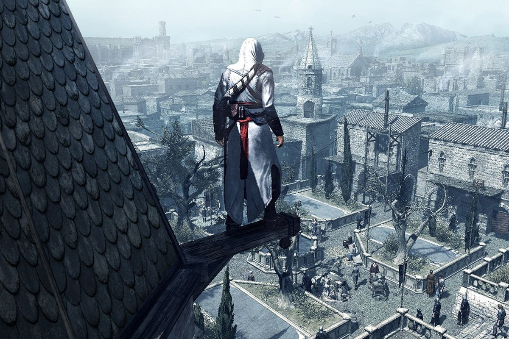
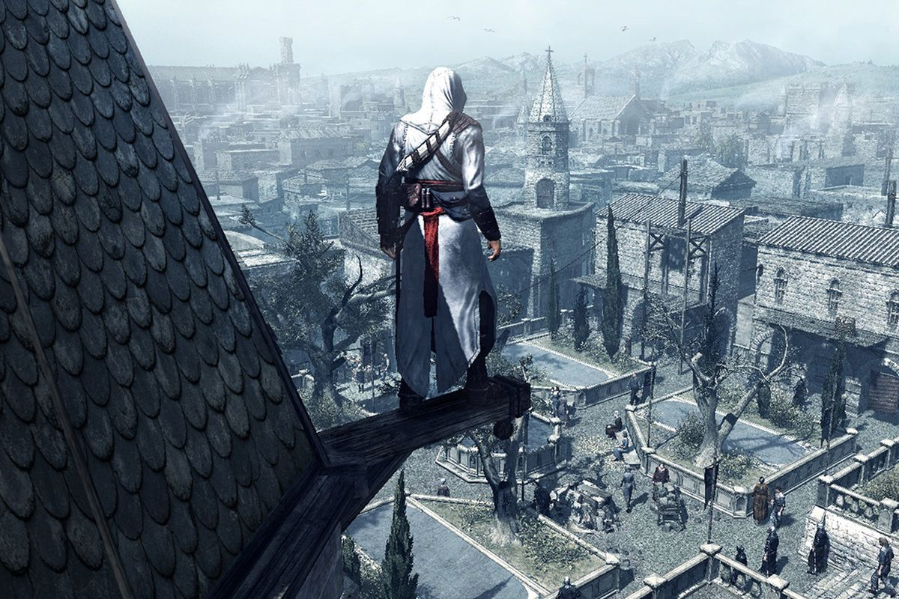

assassin's creed
 

Assassin's Creed is an action-adventure video game developed by Ubisoft Montreal and published by Ubisoft. It is the first installment in the Assassin's Creed series. The game was released for PlayStation 3 and Xbox 360 in November 2007.
The plot is set in a fictional history of real-world events, taking place primarily during the Third Crusade in the Holy Land in 1191. The player character is a modern-day man named Desmond Miles who, through a machine called the "Animus", relives the genetic memories of his ancestor, Altaïr Ibn-La'Ahad. Through this plot device, details emerge about a millennia-old struggle between two factions: the Assassin Brotherhood (inspired by the real-life Order of Assassins), who fight to preserve peace and free will, and the Templar Order (inspired by the Knights Templar military order), who seek to establish peace through order and control.
Hieronder een bekende soundtrack van de assassin's creed game's. bron